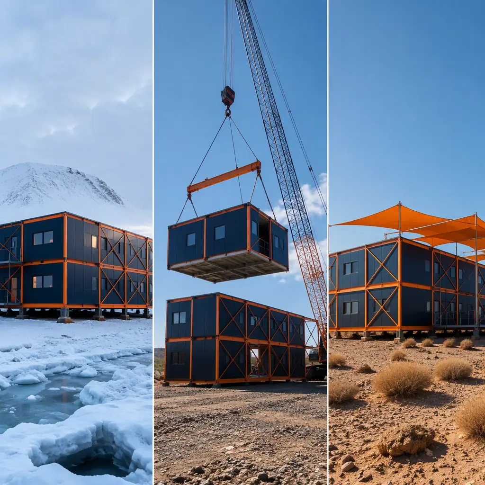
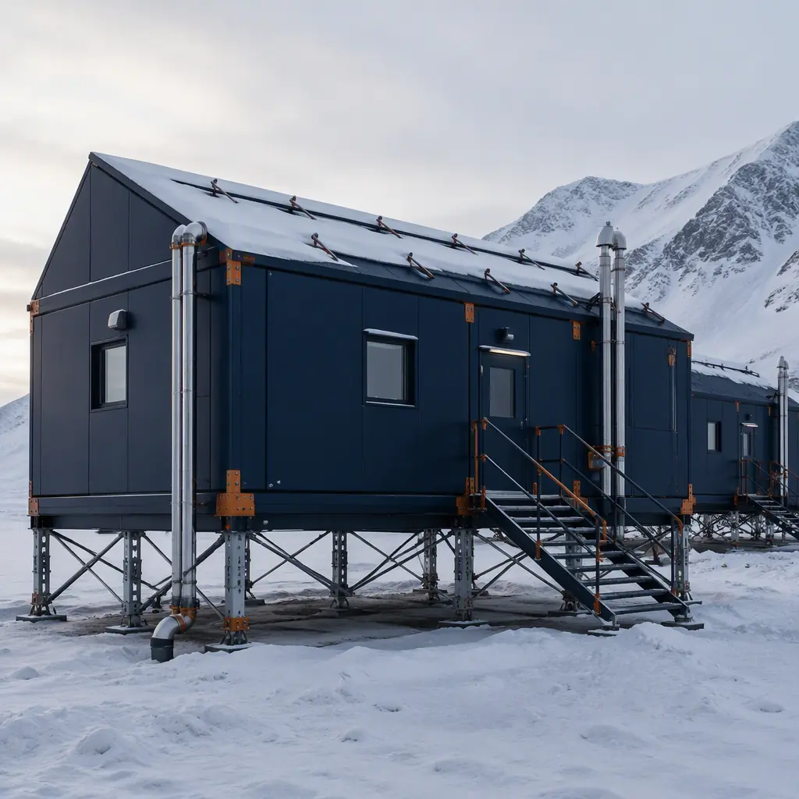
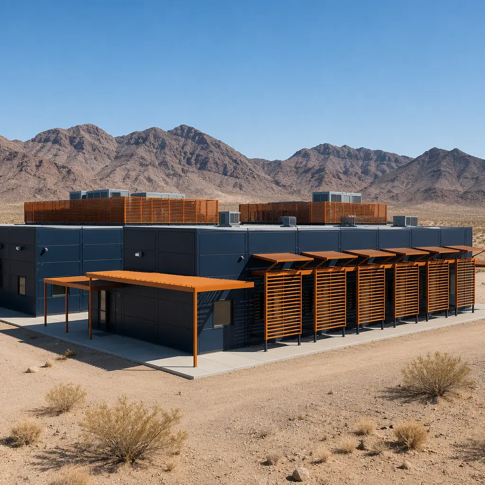
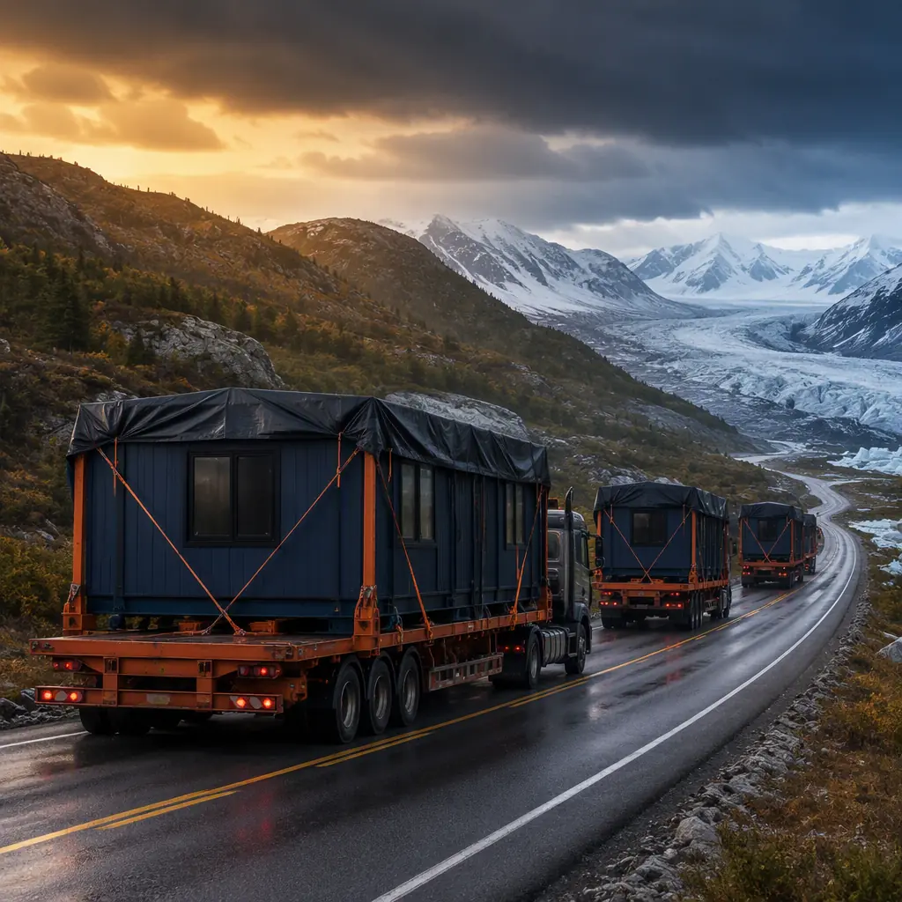
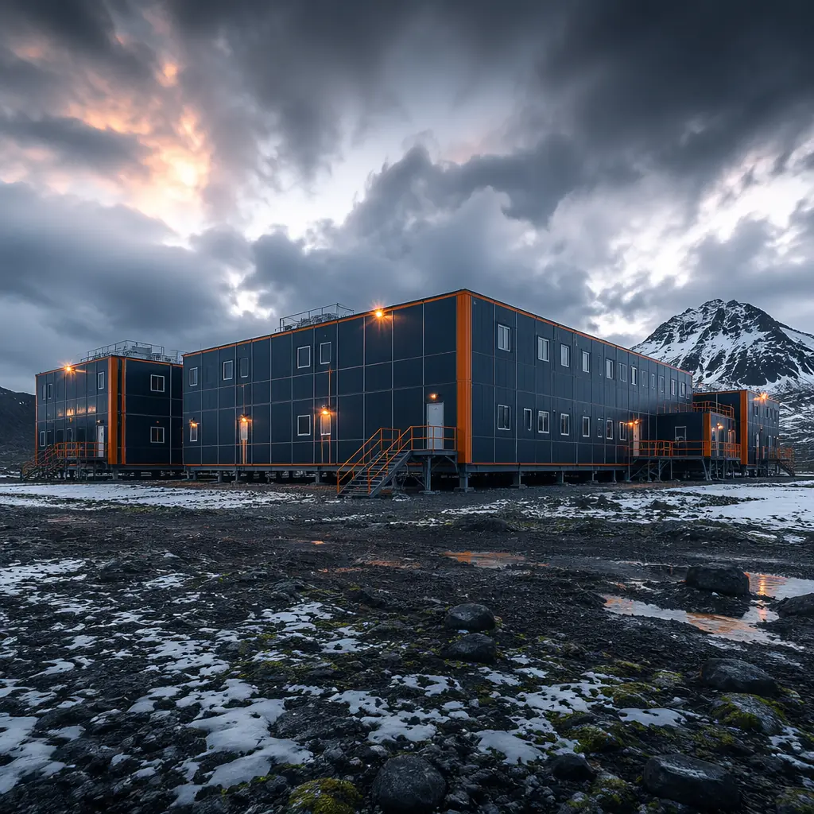

Construction in extreme climates is not an architecture problem — it is a physics problem. When the exterior temperature drops to −45°C in the Canadian Arctic, rises to 52°C in the Saudi Arabian interior, or combines 35°C heat with 95% relative humidity and 250 km/h wind speeds in a Category 5 cyclone, the building envelope ceases to be a design choice and becomes a survival system. Every degree of thermal bridging, every millimeter of air leakage, every joint that allows moisture migration becomes a failure point that compounds over the building's service life. Traditional site-built construction in these environments is a battle against physics conducted by a rotating workforce on a hostile jobsite — and the physics usually wins. Modular construction changes the terms of engagement: the battle is fought on a factory floor where quality control is systematic, not heroic.

Why Extreme Climates Expose the Limits of Site-Built Construction
The fundamental challenge of extreme-climate construction is that the building envelope — the barrier between the conditioned interior and the hostile exterior — must be installed with near-perfect continuity to perform as designed. A wall assembly specified at R-40 will deliver R-28 if the insulation has 5% compression, 3% air gaps, and thermal bridges at every fastener. The problem is not the specification; the problem is that installing continuous exterior insulation, air barriers, and vapor retarders with zero defects on a scaffold in −30°C winds, or in 45°C direct sun, is physically impossible to do consistently. The workers are skilled. The materials are correct. But the environment defeats the process.
Three field studies of Arctic construction projects published in the Journal of Cold Regions Engineering measured as-built envelope performance against design values. The findings were consistent across all three projects: effective R-value delivered was 62–74% of specified R-value. Air leakage rates were 2.5–4× the design target. The performance gap was not the product of negligence — it was the product of a construction method that asks human beings to execute precision work in conditions that machines would refuse. When the same envelope assemblies were built in a factory and transported to site as completed modules, delivered R-value was 94–97% of design specification. The difference is not marginal; over a 20-year building life in an Arctic environment where heating fuel costs $2.50/L delivered, that envelope performance gap compounds into hundreds of thousands of dollars in excess energy expenditure — modular energy efficiency is not a marketing claim but a measurable physical property of the factory production method.

Arctic and Sub-Arctic Design: Building on Permafrost at −50°C
Arctic construction is governed by two physical realities that do not exist in temperate climates. The first is the thermal gradient: maintaining a 65°C differential between a 21°C interior and a −44°C exterior requires envelope assemblies that would be absurd over-engineering anywhere else. The second is permafrost: ground that has been frozen for millennia, and that must remain frozen under and around the building to prevent differential settlement that can destroy a structure within two to three years of occupation.
Envelope Design for Extreme Cold
The Arctic wall assembly for a MODURA module begins with a 152 mm (6″) structural steel stud cavity filled with R-24 mineral wool batts — mineral wool rather than fiberglass because mineral wool is hydrophobic, non-combustible, and maintains its R-value when exposed to the condensation cycles that occur at the stud-to-sheathing interface. The cavity insulation is overlaid with 100 mm (4″) of continuous rigid mineral wool exterior insulation at R-16, eliminating thermal bridging through the steel studs. The resulting effective assembly R-value is R-38–42, verified through calibrated hot-box testing rather than calculated from nominal material values. For comparison, a 2×6 wood-framed wall with fiberglass batts, installed on site in winter conditions by a rotating crew, delivers R-13–16 effective.
The Arctic module roof assembly follows the same principle with a higher thermal budget: R-55+ achieved through rigid polyisocyanurate insulation above the steel roof deck, continuous and fully adhered to eliminate the ventilation cavity that would otherwise create a convection loop extracting heated interior air. Triple-glazed windows with two low-E coatings, argon fill, and warm-edge spacers achieve U-0.15 to U-0.16 (R-6.3 to R-6.7) — and the window-to-wall ratio is held to 15–18% because even a U-0.15 window is a thermal hole compared to an R-40 wall. Every window placement is a deliberate trade-off, not an architectural gesture.
Module-to-module joints in Arctic assemblies incorporate interlocking thermal breaks — a continuous EPS or polyurethane shim 40–50 mm thick that separates the structural steel connection plates bridging between modules. Without this break, the steel-to-steel connection creates a thermal bridge that draws interior heat directly to the exterior at every module joint, forming frost lines visible on the interior wall surface and condensation that feeds mold growth inside the wall cavity. The modular building envelope systems designed for Arctic deployment eliminate this failure mode at the engineering level, before the module leaves the factory floor.
Foundation Systems for Permafrost
The foundation is where permafrost makes its demands known. A traditional slab-on-grade or strip footing transfers building heat into the ground, thawing the permafrost active layer and creating a thaw bulb — a lens of saturated, unstable soil — beneath the building. The building settles. Unevenly. Walls crack. Doors stop closing. Within 18–36 months the structure is uninhabitable.
MODURA Arctic modules use adjustable steel jack-stands on helical screw piles driven 6–12 meters into the permafrost, well below the active layer that thaws and refreezes seasonally. The modules sit 600–900 mm above grade on these stands, creating a ventilated air gap that prevents heat transfer from the building to the ground. Rigid insulated skirting around the perimeter blocks wind-driven snow accumulation under the building while maintaining the air gap's ventilating function. The steel stand system is adjustable; if differential movement does occur — and in permafrost, some movement over decades is inevitable — the stands can be individually re-leveled with a hydraulic jack and shim adjustment without dismantling the module above. No demolition. No excavation. A two-person crew with standard hydraulic equipment can re-level an entire 10-module building in one day.
MEP Adaptation for the Freeze Line
All water supply and drainage lines in Arctic modules run through heated chases within the conditioned envelope — never in the ventilated crawl space. Heat trace cable with redundant circuits and thermostatic control runs the full length of every water line, with freeze-protection alarms wired to the building management system. The plumbing design assumes that at some point in the building's life, the heating system will fail during a −40°C cold snap. The question is not whether For a deeper look, our modular museum & archival storage constru… guide covers the details. this will happen — it is whether the plumbing survives the event. Factory-installed, factory-tested freeze protection makes survival a design outcome rather than a hope.

Desert and Arid Zone Design: Rejecting Heat at 50°C+
Desert construction inverts every Arctic design principle. Where the Arctic envelope must retain heat against a 65°C gradient, the desert envelope must reject solar gain against a 27°C reverse gradient (52°C exterior to 25°C interior). The dominant heat transfer mechanism shifts from conduction to radiation: a dark roof surface under direct sun at 52°C ambient can reach 85°C surface temperature, radiating heat downward into the occupied space at a rate that overwhelms any realistic insulation thickness. The first design priority is therefore not insulating — it is reflecting.
Solar Radiation Management
Roof assemblies for desert modules use white TPO or PVC membrane with a Solar Reflectance Index (SRI) of 100+, reflecting 80–85% of incident solar radiation. The reflected energy is not absorbed — it never enters the building's thermal equation. Below the membrane, 150 mm (6″) of rigid polyisocyanurate insulation provides R-38+ to handle the conducted heat that the reflective surface does not reject. This is the inverse of the Arctic approach — in the Arctic, R-55 roof insulation is necessary because there is no solar radiation to reflect; in the desert, the reflective surface does the heavy lifting and the insulation handles the remainder.
Wall assemblies for desert modules incorporate a ventilated rainscreen cavity — a 25–50 mm air gap between the exterior cladding and the continuous insulation layer — that functions as a solar chimney. Sun heats the exterior cladding, which heats the air in the cavity, which rises and exits through vents at the top of the wall. Ambient air enters at the bottom. The moving air column strips away 50–70% of the solar heat gain before it reaches the insulated wall assembly. This is a passive system with no moving parts — it works because the sun drives the stack effect, and it works precisely when it is needed: when the sun is on the wall.
HVAC and Dust Protection
Desert HVAC design must contend with two simultaneous loads: extreme sensible heat (the 50°C dry-bulb temperature) and airborne particulate matter (the fine silica dust that is suspended in desert air for weeks after a wind event). The solution is 100% outside air systems with energy recovery ventilators (ERVs) that precondition incoming air against exhaust air, reducing the cooling load on the primary equipment by 40–60%. MERV-13 filtration on the intake side captures fine particulates before they reach the cooling coil; without this filtration, dust accumulates on coil surfaces within weeks, reducing heat transfer efficiency and raising the pressure drop across the coil until the system's cooling capacity degrades below the building's load.
Positive-pressure door vestibules on all entries maintain a slight pressurization of the interior relative to the exterior. When the door opens, air flows outward — not inward — preventing dust-laden exterior air from entering. This is a detail that site-built desert construction frequently omits because it requires precise coordination between the door frame, the vestibule structure, and the HVAC pressurization system. In a factory-built module, the vestibule is integrated into the module frame, the door seal is factory-installed and tested, and the pressurization differential is commissioned before the module ships.
![Cross-section view of modular prefabricated construction insulated building envelope panel detail, steel frame structural studs with mineral wool cavity insulation and continuous exterior rigid insulation board, thermal break at module-to-module joint connection, weather barrier and ventilated rainscreen cavity visible in wall assembly layers, factory-assembled insulated panel system for extreme climate performance, dark navy structural elements and warm steel orange brand color details, modular building envelope engineering](../generated/climate-modular-envelope.webp)
Tropical and Cyclone Zone Design: Managing Moisture and Wind
Tropical climates present a different physics problem: the temperature differential between interior and exterior is modest (25°C interior vs 33°C exterior — an 8°C gradient versus the Arctic's 65°C), but the moisture load is extreme and the structural loading from tropical cyclones pushes buildings to their design limits. The design problem shifts from thermal resistance to moisture management and structural continuity.
Moisture and Humidity Control
In a tropical environment with 85–95% relative humidity, the vapor drive is from exterior to interior — the opposite of the cold-climate condition where interior moisture is driven outward and condenses in the wall cavity. Tropical wall assemblies must prevent exterior moisture from reaching the interior while allowing any moisture that does enter the assembly to drain or dry to the exterior.
The MODURA tropical wall assembly uses a drainage plane behind the exterior cladding — typically a three-dimensional drainage mat that creates a 10 mm continuous air and water gap — with weep holes at the base of each panel to allow bulk water drainage. The continuous insulation layer (R-12 mineral wool for tropical applications where the thermal load is modest) is installed inboard of the drainage plane, with a vapor-permeable WRB (water-resistive barrier) that allows outward drying. The interior finish is latex paint on gypsum board — vapor-permeable enough to allow the assembly to breathe but not so permeable that interior humidity penetrates the wall during the cooling season. The principle is to manage moisture with a designed path for water that does get in, rather than attempting to create a perfect seal — because in a tropical environment, the perfect seal does not exist over a 30-year service life.
Cyclone and Hurricane Structural Design
Tropical cyclones impose wind loads that are an order of magnitude higher than standard building code requirements for temperate regions. A Category 4 cyclone produces sustained wind speeds of 210–250 km/h with gusts exceeding 280 km/h, generating uplift forces on the roof that can exceed the dead load of the entire roof assembly. A site-built structure relies on field-installed hurricane ties, strapping, and nailing patterns that are only as reliable as the crew that installed them on the day the inspector was not watching.
A modular building designed for cyclone zones integrates the complete load path — roof sheathing → roof trusses → module frame → inter-module connections → foundation anchors — into a single engineered, factory-welded steel frame. The roof-to-wall connection is a continuous welded moment connection, not a nailed-toe connection dependent on nail diameter and penetration depth. The inter-module connections at the corners use Grade 8 bolts through engineered steel plates, connecting the modules into a single structural unit. A 20-module building connected this way behaves like a single, rigid body under wind loading rather than 20 independent boxes that can separate at the joints. This is why modular coastal and flood-resistant construction and modular seismic design share a common structural logic: the factory-welded steel frame creates a load path that field connections cannot replicate.
Foundation Elevation for Storm Surge
Coastal tropical sites add storm surge to the structural equation. MODURA tropical modules are elevated on reinforced concrete piers or steel piles to a height determined by the 500-year flood elevation plus 600 mm of freeboard, with the module frame designed to withstand hydrostatic and wave forces at that elevation. The pile-to-module connection uses a bolted base plate detail that transfers uplift, shear, and overturning moment — the same connection principle as the Arctic jack-stand system, adapted for a different load case. The modular approach turns what would be an expensive, site-specific foundation design for a one-off building into a standardized, repeatable detail that has been engineered once and deployed across multiple projects.
Comparative Climate Engineering: One System, Three Envelopes
The modular method's advantage in extreme climates is not that it produces a different building for each climate — it is that the same structural module system, manufactured on the same For a deeper look, our modular self-storage construction — bui… guide covers the details. production line, can be configured with different envelope packages for different climate zones. The steel frame does not change. The module dimensions do not change. The factory processes — framing, sheathing, MEP rough-in, interior finish — are identical. What changes is the envelope specification: insulation type, thickness, and placement; window specification; roof membrane; vapor barrier location; and exterior cladding system. This modularity of specification means that a project developer operating in multiple climate zones — a mining company with camps in both the Chilean Atacama and the Canadian Yukon, for example — can standardize on a single module platform while tailoring the envelope to each site's requirements.
| Design Parameter | Arctic (−50°C) | Desert (+50°C) | Tropical (Cyclone) |
|---|---|---|---|
| Wall R-value (effective) | R-38–42 | R-24–28 with ventilated cavity | R-12–16 with drainage plane |
| Roof R-value (effective) | R-55+ | R-38+ with SRI 100+ membrane | R-24+ with standing-seam metal |
| Windows | Triple-glazed, U-0.15, 15–18% WWR | Double-glazed low-E, SHGC <0.25, 15–20% WWR | Impact-resistant, DP-80+, 20–30% WWR |
| Foundation | Adjustable steel jack-stands on helical piles | Elevated concrete piers with thermal break | Elevated reinforced concrete piers, storm surge height |
| Vapor barrier | Interior side (warm side) — Class I vapor retarder | Exterior side — vapor-permeable WRB | Drainage plane with weep system, outward drying |
| HVAC strategy | High-efficiency furnace + HRV, heated plumbing chases | 100% OA with ERV, MERV-13, positive-pressure vestibules | Dedicated dehumidification + cooling, corrosion-resistant coils |
| Structural wind design | Snow load 4.8 kPa, seismic Zone 2 | Standard wind, thermal expansion joints | Cyclone Cat 4/5, 280 km/h gust, missile impact rated |
What this table demonstrates is that extreme-climate modular construction is not about one-off custom engineering for each project. It is about a platform of standardized module types — living quarters, kitchens, clinics, offices, utility modules — each available with three envelope packages (Arctic, Desert, Tropical) that have been engineered once and validated through calibrated testing. This is the same platform logic that makes modular mining camp construction and modular workforce housing for remote projects economically viable across geographies: the engineering cost is amortized over the platform, not carried by each individual project.

Field Performance: What Factory Construction Actually Delivers
The theoretical case for modular extreme-climate construction is supported by thermodynamics, structural engineering, and construction logistics. The empirical case is supported by blower-door test results, infrared thermography, and energy consumption data from operating buildings. Post-occupancy evaluations of MODURA Arctic modules — buildings that have been occupied for five to eight years at sites north of 60° latitude — show envelope airtightness of 0.8–1.2 ACH at 50 Pa, compared to 3.0–5.0 ACH for site-built equivalents of the same vintage. The difference between 1.0 ACH and 4.0 ACH in a building with a 65°C thermal gradient is approximately 1,200–1,500 liters of heating fuel per year per module — or about $3,000–$3,750 per module per year at Arctic fuel delivery prices. For a 200-person camp comprising 80 modules, that is $240,000–$300,000 per year in fuel savings attributable directly to the factory-built envelope.
Desert modules show similar performance deltas in the cooling domain. Infrared thermography of operating MODURA desert modules shows surface temperatures on interior walls within 1–2°C of the design setpoint across the entire wall area, with no hot spots at stud locations — indicating that the continuous exterior insulation is performing as designed and thermal bridging through the steel frame is effectively eliminated. Site-built equivalents in the same climate zone routinely show 5–8°C hot spots at stud locations, corresponding to the steel studs conducting exterior heat directly through the wall assembly.
Tropical cyclone performance is harder to measure in the field because the test — a direct hit from a major cyclone — is an event that you hope does not occur. However, post-cyclone damage assessments of modular buildings in cyclone-affected regions consistently show that module-to-module connections and the continuous steel frame load path prevent the progressive collapse failures that destroy site-built structures when one component fails and the load is redistributed to components that were never designed to carry it. The modular vs SIP construction comparison is instructive here: SIP panels provide excellent thermal performance but rely on field-installed spline connections for structural continuity; the modular steel frame integrates thermal and structural performance into a single, factory-welded system.
Extreme-climate construction is not a test of materials — it is a test of process. The materials available to site-built and modular construction are essentially identical. The difference is that the factory process eliminates the environmental variables that degrade workmanship quality: wind, precipitation, extreme temperatures, and the physical toll of remote work on rotating crews. What looks like a modular-versus-traditional comparison on paper is actually a factory-process-versus-field-process comparison in reality. The factory wins because it removes the environment from the equation.
Making the Decision: When Modular Extreme-Climate Construction Makes Sense
Not every building in an extreme climate warrants a modular approach. A single-family residence in Fairbanks, Alaska, or a small office in Darwin, Australia, can be built satisfactorily using site construction with careful contractor selection and rigorous inspection. The modular approach becomes the correct economic and technical decision when the project involves multiple buildings at a remote site; when the construction window is constrained by weather or seasonal access; when the labor market at the project site is thin or non-existent; and when the long-term operating cost of the building — energy, maintenance, and eventual decommissioning or relocation — matters to the owner.
These conditions describe most industrial, institutional, and commercial projects in extreme climates: mining camps, oil and gas field facilities, research stations, military installations, remote healthcare clinics, and workforce accommodations. For these project types, the modular approach is not an alternative to site-built construction — it is the baseline against which alternatives should be measured, because it is the only construction method that separates the building process from the building site's hostile environment. As we detail in our analysis of modular construction transportation logistics, the cost of moving completed modules to a remote site is real — but it is a cost that is known, controlled, and amortized, unlike the uncontrolled cost of attempting precision construction at a site where the environment is actively hostile to the work.
